library(tidyverse)
kstarter <- read_csv("data/Kickstarter_nc.csv")
dim(kstarter)[1] 1609 18This workshop aims to cover:
Quarto provides a straightforward way to create reports that combine code and the output from that code with text commentary. This allows for the creation of automated, reproducible reports. Quarto can knit together your analysis results with text and output it directly into HTML, PDF, or Word documents. In fact, we have been using Quarto to generate the webpage for all of our R Open Labs workshops!
Quarto is very similar to an older tool, R Markdown, that these workshops were originally created in. Quarto and R Markdown syntax and behind the scenes functionality are similar, but Quarto is designed to be more compatible with other languages like Python and Julia. In most cases, you can convert old R Markdown .Rmd documents into Quarto documents with no changes.
Quarto has three components.
```To create a new Quarto document (.qmd), select File -> New File -> Quarto Document.
You will have the option to select the output: we’ll use the default HTML for this workshop. Give the document a title and enter your name as author: this will create the header for you at the top of your new .html page! RStudio will create a new Quarto document filled with examples of code chunks and text.
---
title: "beginR: Joining, Reshaping & Reproducible Reports"
author:
name: University of North Carolina at Chapel Hill
execute:
echo: true
format:
html:
theme: spacelab
toc: true
toc-location: left
page-layout: article
---At the top of the page is the optional Yet Another Markup Language (YAML) header. This header is a powerful way to edit the formatting of your report (e.g. figure dimensions, presence of a table of contents, identifying the location of a bibliography file).
```{r}
#| label: setup
#| warning: false
library(tidyverse)
```R code chunks are surrounded by ```. Inside the curly braces, it specifies that this code chunk will use R.
#| precedes options for this code chunk. In this case:
#| label: setup names this chunk “setup”. (Names are optional)#| warning: false tells Quarto to hide any warnings generated by our code in the final HTML document.Finally the code library(tidyverse) is executed as usual. When creating a document, you can use the buttons at the top right of the code chunk to run all code before and run the code in this block respectively.
Use CTRL+ALT+i (PC) or CMD+OPTION+i (Mac) to insert R code blocks.
## Quarto
Quarto enables you to weave together content and executable code into a finished document. To learn more about Quarto see <https://quarto.org>.
## Running Code
When you click the **Render** button a document will be generated that includes both content and the output of embedded code. You can embed code like this: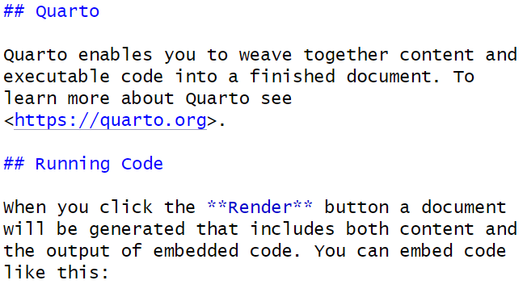
This is plain text with simple formatting added. The ## tells Quarto that “Quarto” and “Running Code are section headers. The ** around”Render” tells Quarto to make that word bold.
The Posit team has helpfully condensed these code chunk and text formatting options into a cheatsheet.
You can get pretty far with options in the Quarto cheatsheet, but Quarto is a very powerful, flexible language that we do not have time to fully cover. More detailed references are available here: https://quarto.org/docs/authoring/markdown-basics.html
R Studio provides a visual editor for Quarto documents. This can be accessed by toggling between the “Source” and “Visual” options in the top left corner of your Qmd script editor pane.
Once activated, this interface is similar to a word processing software like Microsoft Word - shortcuts for bolding, italics, etc. are usually the same and there are icons and drop down menus available for lists, bullets, links, and more.
You can still use CTRL+ALT+i (PC) or CMD+OPTION+i (Mac) to insert R code blocks, or use the Insert>Code Chunk>R menu in the visual editor.
Read more about the visual editor here:
https://quarto.org/docs/visual-editor/
Click the Render button, and R Studio will generate an HTML report based on your document.
Let’s try creating an Quarto document to explore US cheese consumption data.
### Data Import
```{r}
consumption <- read_csv("https://unc-libraries-data.github.io/beginR/Join_Reshape_Reports/data/clean_cheese.csv")
```
### Useful functions for exploring dataframes
Include one of the following in your document. We've used `eval = FALSE` here to prevent this code chunk from running!
```{r}
#| label: misc
#| eval: FALSE
head(consumption)
tail(consumption)
summary(consumption)
```
### Tables and `knitr::kable`
By default, Quarto will display tables the way they appear in the R console. We can use `knitr::kable function` to get cleaner tables.
```{r}
#| label: kable
knitr::kable(head(consumption), caption = "The first six rows of the cheese consumption data")
```
### Adding a new variable
We've covered two ways to add a new variable to a dataframe.
**Note:** R allows non-standard variable names that include spaces, parentheses, and other special characters. The way to refer to variable names that contain wonky symbols is to use the backtick symbol `` ` ``, found at the top left of your keyboard with the tilde `~`.
The base R way covered in lesson 1 using the `$` operator and `with()` function
```{r}
#| label: ratio1
#| error: TRUE
#Base R way, covered in lesson 1
consumption$amer_ital_ratio <- with(consumption, `Total American Cheese` / `Total Italian Cheese`)
```
Oops. Better check the variable names.
```{r}
#| label: ratio2
consumption$amer_ital_ratio1 <- with(consumption, `Total American Chese` / `Total Italian Cheese`)
```
The tidyverse way covered in lesson 3 using the `mutate()` function
```{r}
#| label: ratio3
#Tidyverse way, covered in lesson 3
consumption <- mutate(consumption, amer_ital_ratio2 = `Total American Chese` / `Total Italian Cheese`)
```
### Selecting Columns
```{r}
#| label: select
consumption <- select(consumption, Year, Cheddar, Mozzarella, `Cream and Neufchatel`)
```
### Renaming Columns
```{r}
#| label: rename
consumption <- rename(consumption, Cream_and_Neufchatel = `Cream and Neufchatel`)
```
### Plotting
```{r}
#| label: plot1
#| fig.width: 8
#| fig.height: 5
ggplot(consumption, aes(x = Year)) +
geom_point(aes(y = Cheddar, col = "Cheddar")) +
geom_point(aes(y = Mozzarella, col = "Mozzarella")) +
geom_point(aes(y = Cream_and_Neufchatel, col = "Cream and Neufchatel")) +
ylab("Consumption in Pounds Per Person")
```Quarto also provides a nifty way to incorporate a bibliography and references. We’ll haven an example of this in the exercises, but here’s a brief summary of the steps required to use a BibTex bibliography.
bibliography: references.bibIt is best practice to set up a new directory each time we start a new project in R. To do so, complete the following steps:
Exploratory Data Analysis (EDA) is the process of exploring your data, focused on discovering patterns rather than statistical testing. R for Data Science breaks this down into three steps:
- Generate questions about your data.
- Search for answers by visualizing, transforming and modelling your data.
- Use what your learn to refine your questions and/or generate new questions.
This process can be repeated many times.
dim, str, and summaryBefore we start asking questions of our dataset, we need to determine the basic contents of the dataset.
library(tidyverse)
kstarter <- read_csv("data/Kickstarter_nc.csv")
dim(kstarter)[1] 1609 18We have 18 variables (columns) across 1609 observations (rows).
In R, we can use square brackets, [], to quickly select a subset of rows and/or columns by position using numeric indices. Unlike some programming languages, R starts counting positions at 1 instead of zero.
For example, if we want to look at row 7, column 2 of our kstarter data frame, we can do it like so:
kstarter[7,2]# A tibble: 1 × 1
name
<chr>
1 The Valley of the Pharaohs - 40th Anniversary EditionThere are a number of different ways we can use indexing to subset our data:
kstarter[,1] # column 1
kstarter[,7:10] # columns 7 through 10
kstarter[,c(1,8,11)] # columns 1, 8 and 11
kstarter[2,] # row 2
kstarter[3:9,] # rows 3 through 9
kstarter[c(7,10),] # rows 7 and 10For a vector, we only need one number to describe position:
myvec <- c("a","b","c","d","e","f","g")
myvec[1] "a" "b" "c" "d" "e" "f" "g"myvec[1][1] "a"myvec[4:7][1] "d" "e" "f" "g"myvec[c(1,3,7)][1] "a" "c" "g"str and summary (with Indexing)We can use str and summary to learn more about each of these 36 variables. We’ll use indexing to get results for only the first three columns with str
str(kstarter[,1:3])tibble [1,609 × 3] (S3: tbl_df/tbl/data.frame)
$ id : num [1:1609] 1.63e+09 1.17e+09 1.24e+09 1.58e+09 7.17e+08 ...
$ name : chr [1:1609] "Halae: Rise of the Verdant Shadow a DnD 5e/5.5 Expansion" "Choosey: A cozy sticker game" "Amaru's World Tour" "Dungeon Master's Market" ...
$ creator_name: chr [1:1609] "Dan Sprietzer" "HighStrangeness" "Six Wing Studios" "Tyler Church" ...The equivalent way to do this using dplyr and the |> we learned earlier would be:
kstarter |>
select(id:creator_name) |>
str()tibble [1,609 × 3] (S3: tbl_df/tbl/data.frame)
$ id : num [1:1609] 1.63e+09 1.17e+09 1.24e+09 1.58e+09 7.17e+08 ...
$ name : chr [1:1609] "Halae: Rise of the Verdant Shadow a DnD 5e/5.5 Expansion" "Choosey: A cozy sticker game" "Amaru's World Tour" "Dungeon Master's Market" ...
$ creator_name: chr [1:1609] "Dan Sprietzer" "HighStrangeness" "Six Wing Studios" "Tyler Church" ...We’ll use summary with the 6th, 10th, and 13th columns.
summary(kstarter[,c(6,10,13)]) category_name goal backers_count
Length :1609 Min. : 1 Min. : 0.0
N.unique : 119 1st Qu.: 1200 1st Qu.: 5.0
N.blank : 0 Median : 5000 Median : 25.0
Min.nchar: 3 Mean : 18568 Mean : 119.9
Max.nchar: 17 3rd Qu.: 12000 3rd Qu.: 83.0
NAs : 40 Max. :4779000 Max. :16734.0 To get the same results using dplyr and the |>, we could use:
kstarter |>
select(category_name, goal, backers_count) |>
summary() category_name goal backers_count
Length :1609 Min. : 1 Min. : 0.0
N.unique : 119 1st Qu.: 1200 1st Qu.: 5.0
N.blank : 0 Median : 5000 Median : 25.0
Min.nchar: 3 Mean : 18568 Mean : 119.9
Max.nchar: 17 3rd Qu.: 12000 3rd Qu.: 83.0
NAs : 40 Max. :4779000 Max. :16734.0 A natural starting place for EDA is learning more about individual variables. We’re often interested in the relative frequency of different values of a given variable.
What are the most common categories of Kickstarters in North Carolina?
tabletable provides a simple frequency table for a categorical (usually factor or character) variable.
table(kstarter$category_parent_name)
Art Comics Crafts Dance Design Fashion
99 257 21 5 95 80
Film & Video Food Games Journalism Music Photography
118 85 320 5 113 17
Publishing Technology Theater
316 67 11 Games are the most popular types of Kickstarter projects in North Carolina, with Publishing and Comics coming in second and third.
Representing our data visually can be a very useful way to explore it. One of the most popular visualization packages in R is ggplot2. The “gg” in ggplot stands for “Grammar of Graphics”. ggplots are built by first creating a plot object, then adding layers to it.
When building a plot object, we need to determine how our variables will be mapped to the different visual properties of the plot. This is done using the aes() function. x and y arguments inside aes allow us to choose which variables will exist on the X and Y axes. Next, we add layers to the plot. Layers include visual elements like lines, bars, dots and text labels, along with more abstract elements like scales, facets and themes.
We will try out different types of ggplots as we continue our EDA. To learn more, you can read about the Grammar of Graphics or check out the ggplot cheatsheet.
geom_barWe can represent categorical variables with a bar chart, using a ggplot with a geom_bar layer. geom_barrequires us to provide only one categorical variable as an aesthetic (x for vertical bars or y for horizontal ones) then plots frequency on the other axis.
ggplot(data = kstarter, aes(y = category_parent_name)) +
geom_bar()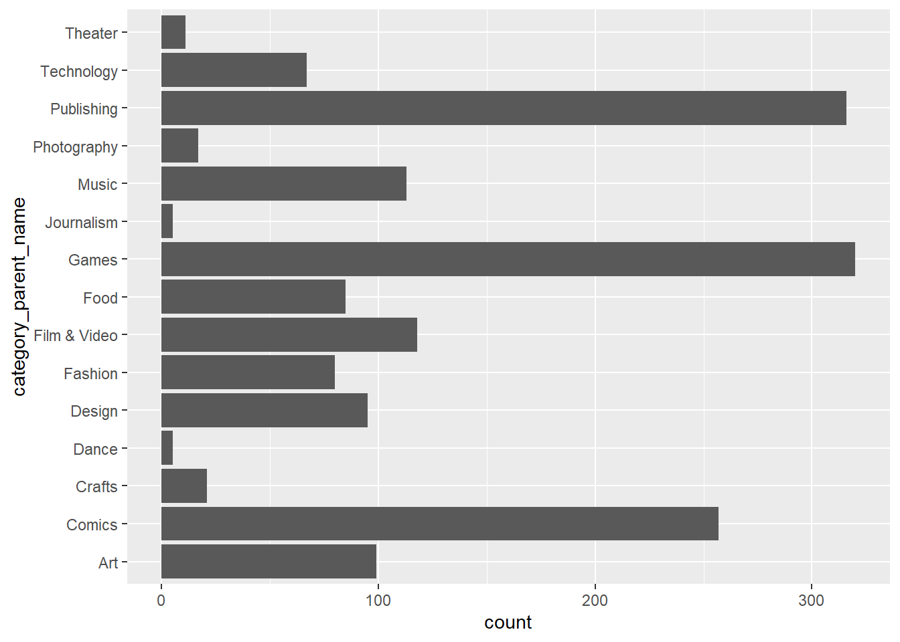
Using fct_infreq will quickly re-arrange our categories to be plotted in frequency order. I’ve also used labs layers to provide better labels for our axes.
ggplot(data = kstarter, aes(y = fct_rev(fct_infreq(category_parent_name)))) +
geom_bar() +
labs(
y = "Kickstarter Categories",
x = "Number of Projects"
)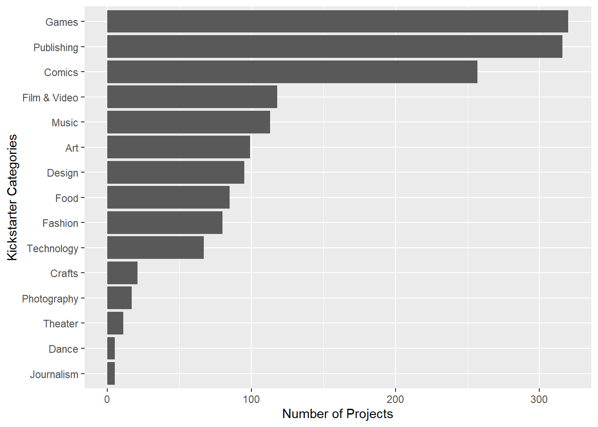
How many music projects have lots of backers?
Unfortunately, with continuous variables, we usually have too many distinct values to make a table or bar chart useful.
kstarter |>
filter(category_parent_name == "Music") |>
ggplot(aes(y = backers_count)) +
geom_bar()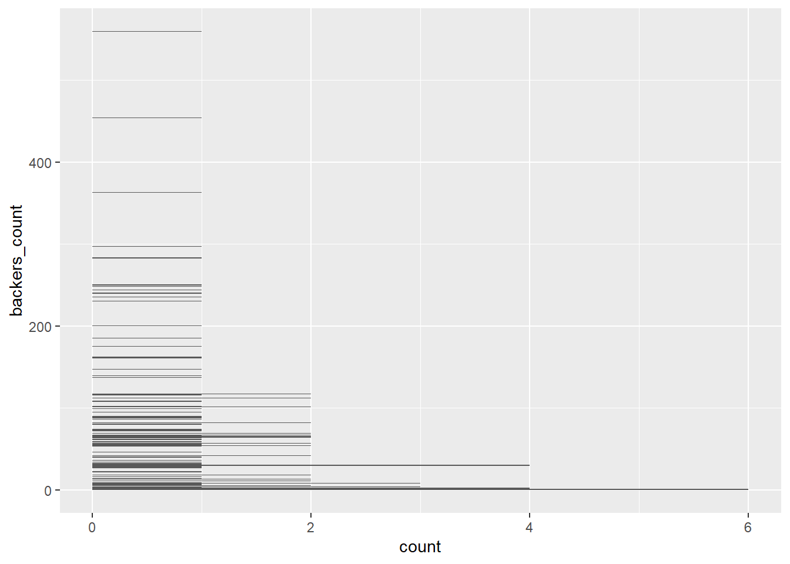
geom_histA common way to overcome this problem is to bin values into ranges with a histogram.
kstarter |>
filter(category_parent_name == "Music") |>
ggplot(aes(x = backers_count)) +
geom_histogram(bins = 20) +
theme_bw()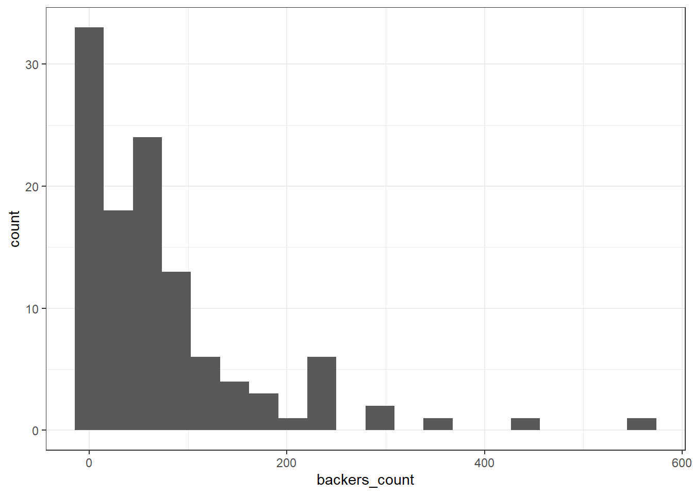
It’s important to note that a histogram can look very different depending on how many ranges or “bins” we use.
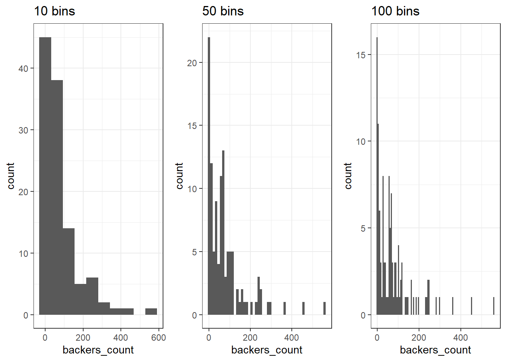
geom_boxplotThe boxplot provides another convenient summary of a continuous variable. Adding a theme layer to this plot changes its overall appearance - in this case, providing more contrast.
kstarter |>
filter(category_parent_name == "Music") |>
ggplot(aes(x = backers_count, y = category_name)) +
geom_boxplot() +
theme_bw()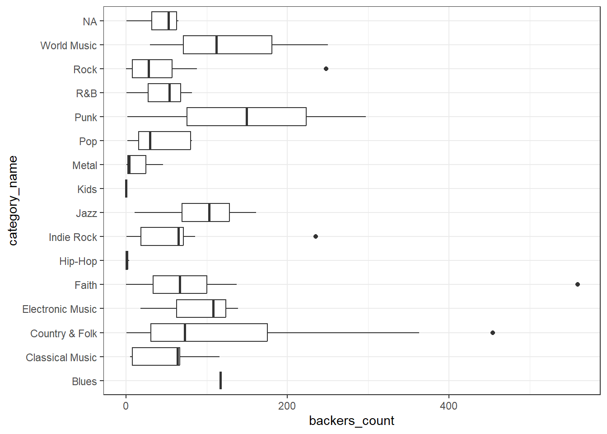
The box of the boxplot ranges from the 25th to the 75th percentile, and therefore contains half of the observed data. The line running down the middle of the box is the median.
The difference between the 25th and 75th percentiles, the width of the box, is known as the inter-quartile range (IQR).
The lines extending out to the left and right of the box represent the furthest extent of datapoints that are within 1.5 IQR of the box.
Finally, the points represent outliers.
Outliers are data that are “far” away from your other observations in terms of one or more variables. There are a number of frequently used cutoffs to help identify outliers in continuous variables.
However, there is no fixed rule as to when you should remove an observation you have identified as an outlier. In general, you want to remove observations that aren’t really in the population you’re studying. This includes values that may have been entered in error or produced by malfunctioning sensors or equipment. In other cases, a suprirsing, but accurate, outlying value, can be the most important result. Observations shouldn’t be removed just because they’re outliers.
Once we have a handle on single variables in our dataset, we can start hypothesizing about relationships between variables.
Does having more backers always mean more money pledged?
The most common way to explore the interaction between two continuous variables is with a scatterplot, using geom_point.
kstarter |>
ggplot(aes(x = backers_count, y = pledged)) +
geom_point() +
theme_bw()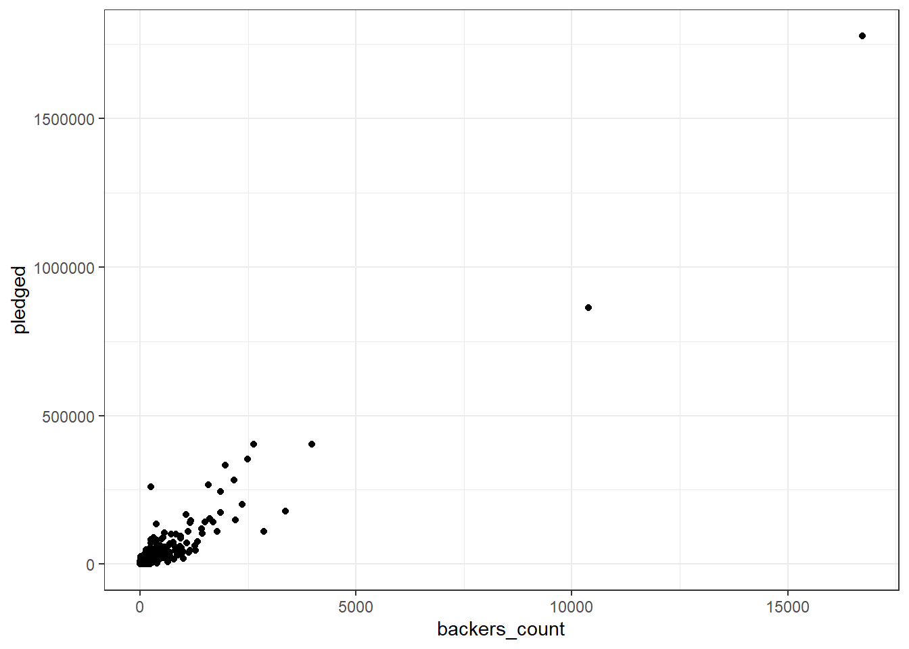
As in many large datasets, we have so many points in certain areas that it can be hard to tell how many observations are actually represented. We can get a better sense of how many observations are in a given area by adding some transparency, using the alpha aesthetic of geom_point.
kstarter |>
ggplot(aes(x = backers_count, y = pledged)) +
geom_point(alpha = 0.08) +
theme_bw()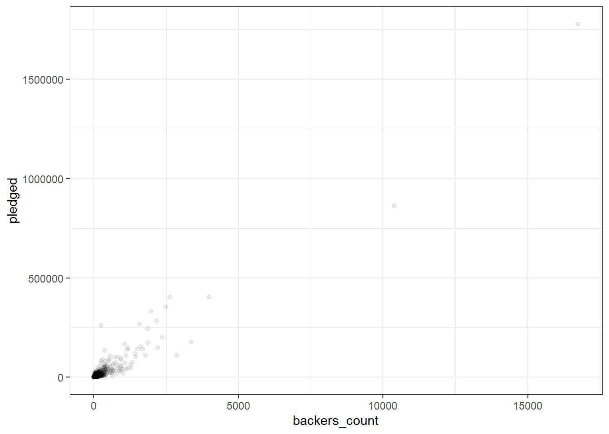
For comparison, let’s zoom in on the grid where projects have less than 5,000 backers and received less than $500,000:
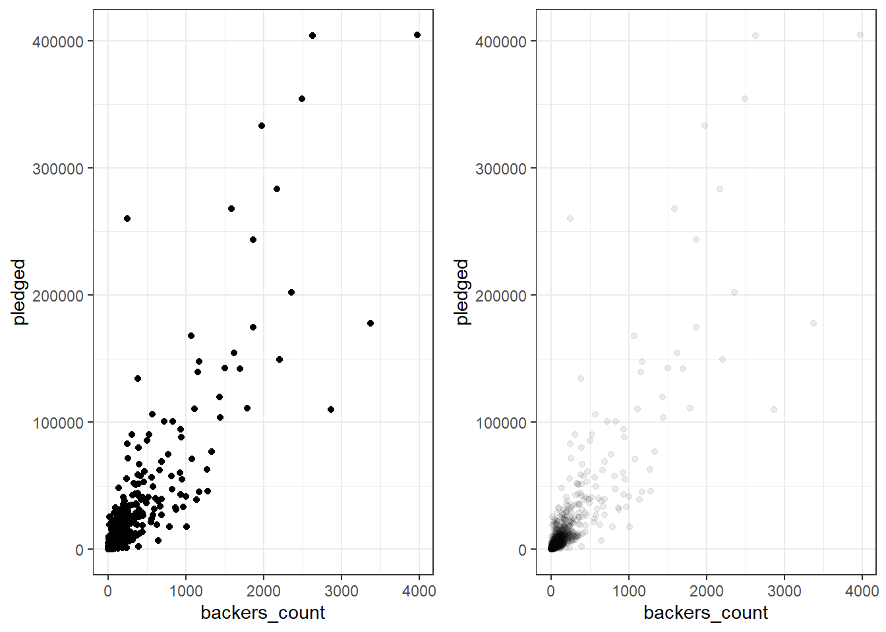
We can see that most projects receive less than $50,000 and have less than 500 backers. But, we can also find projects that received large sums from small amounts of backers, and projects with many backers that did not pledge much money!
Which categories of projects most often exceed their goal?
We can use table with two variables to get a quick summary.
table(kstarter$category_parent_name, kstarter$goal_exceeded)
FALSE TRUE
Art 47 52
Comics 47 210
Crafts 16 5
Dance 4 1
Design 53 42
Fashion 53 27
Film & Video 90 28
Food 69 16
Games 158 162
Journalism 4 1
Music 37 76
Photography 6 11
Publishing 152 164
Technology 59 8
Theater 3 8We can represent this graphically in a number of ways. For example, we can use geom_count to plot points sized by frequency. This has the benefit of avoiding overlapping points.
kstarter |>
ggplot(aes(x = goal_exceeded, y = category_parent_name)) +
geom_count() +
scale_size_area(max_size = 8) +
theme_bw()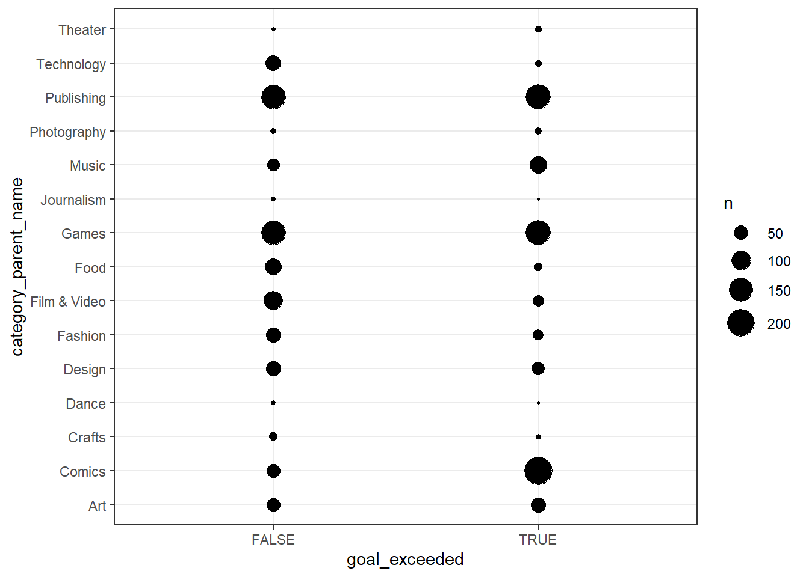
What type of publishing projects have the largest goals on average?
Let’s continue looking at room types, but lets compare a continuous variable, prices, across the categories. Recall that we can use group_by and summarize from earlier to get a summary table:
kstarter |>
filter(category_parent_name == "Publishing") |>
group_by(category_name) |>
summarize(mean_goal = mean(goal), median_goal = median(goal))# A tibble: 16 × 3
category_name mean_goal median_goal
<chr> <dbl> <dbl>
1 Academic 16875 12500
2 Anthologies 5523. 3000
3 Art Books 9012. 7500
4 Calendars 2000 2000
5 Children's Books 7247. 4000
6 Comedy 2850 2850
7 Fiction 4449. 1650
8 Letterpress 1500 1500
9 Literary Journals 5250. 5250.
10 Literary Spaces 29850. 9750
11 Nonfiction 9246. 5750
12 Poetry 4947. 2200
13 Radio & Podcasts 21660. 11000
14 Young Adult 6067. 3000
15 Zines 1422. 1000
16 <NA> 2633. 2600 However, we’ll usually get a better sense of the data with a visualization such as a boxplot.
kstarter |>
filter(category_parent_name == "Publishing") |>
ggplot(aes(x = goal, y = category_name)) +
geom_boxplot() +
theme_bw()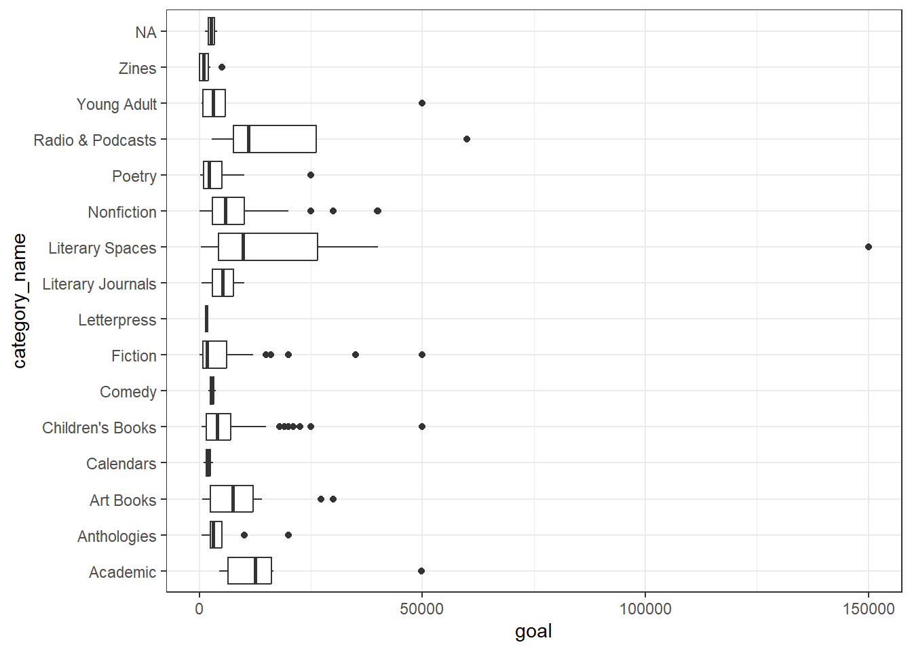
We can control the order of boxplots with reorder. reorder(category_name, goal, median) will reorder the categories of publishing projects based on median goal. Below, we’ve also filtered out publishing projects without a category name.
kstarter |>
filter(category_parent_name == "Publishing" & !is.na(category_name)) |>
ggplot(aes(x = goal, y = reorder(category_name, goal, median))) +
geom_boxplot() +
theme_bw()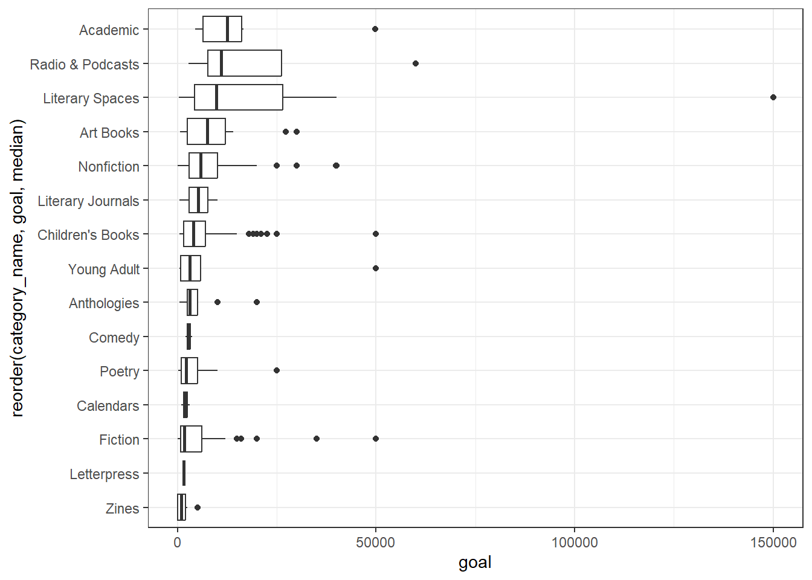
Unfortunately, for histograms, we already have counts on the y axis by default, so we’ll use facets instead. Facets allow you to create multiple plots - one for each level of a categorical variable.
kstarter |>
filter(category_parent_name == "Publishing") |>
ggplot(aes(x = goal)) +
geom_histogram(bins = 20) +
facet_wrap(vars(category_name)) +
theme_bw()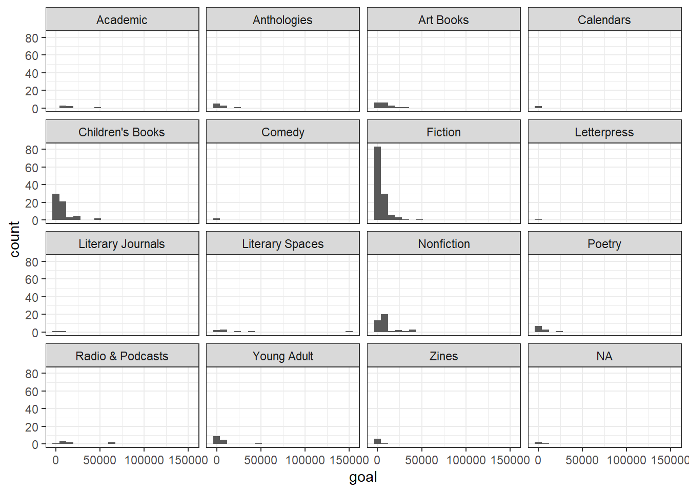
To place several histograms in one overlapping plot, we should to convert the bar representation into lines, to make overlaps easier to see and understand. We’ll use the color aesthetic to separate our categories.
*geom_freqpoly represents each histogram as a line plot through the top of each bar. We’ll use the size parameter for geom_freqpoly to make the lines a little thicker than the default.
kstarter |>
filter(category_parent_name == "Publishing") |>
ggplot(aes(x = goal, color = category_name)) +
geom_freqpoly(bins = 20, linewidth = 1)+
theme_bw()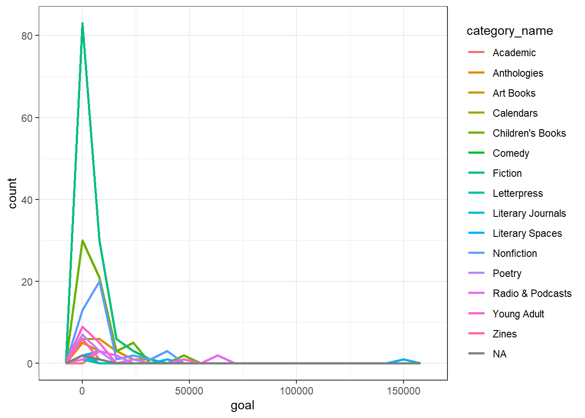
Does a project being featured affect whether or not it does well?
If we want to look for correlations between variables, we can use the cor() function. This will only work with numeric variables, however the function will automatically convert logical variables to numeric.
kstarter_cm <- kstarter |>
select(where(is.numeric) | where(is.logical), -id) |>
cor()
kstarter_cm goal pledged percent_funded backers_count goal_reached
goal 1.00000000 0.03321195 -0.01590598 0.03563924 -0.08098327
pledged 0.03321195 1.00000000 0.08957864 0.96295990 0.16034526
percent_funded -0.01590598 0.08957864 1.00000000 0.09217809 0.14600479
backers_count 0.03563924 0.96295990 0.09217809 1.00000000 0.18595844
goal_reached -0.08098327 0.16034526 0.14600479 0.18595844 1.00000000
goal_exceeded -0.07941348 0.16234066 0.14763473 0.18835225 0.98519078
spotlight -0.07959149 0.15972034 0.14674221 0.18638530 0.98396687
staff_pick -0.01597592 0.22097841 0.08494968 0.21865231 0.31385741
goal_exceeded spotlight staff_pick
goal -0.07941348 -0.07959149 -0.01597592
pledged 0.16234066 0.15972034 0.22097841
percent_funded 0.14763473 0.14674221 0.08494968
backers_count 0.18835225 0.18638530 0.21865231
goal_reached 0.98519078 0.98396687 0.31385741
goal_exceeded 1.00000000 0.96892383 0.31632515
spotlight 0.96892383 1.00000000 0.30972716
staff_pick 0.31632515 0.30972716 1.00000000cor() outputs a matrix that shows us the correlation coefficient for every possible pair of variables. This output can be easier to read if we first convert it to a table, then a dataframe.
kstarter_cdf <- kstarter_cm |>
as.table() |>
as.data.frame() |>
rename(Coef = Freq)
head(kstarter_cdf) Var1 Var2 Coef
1 goal goal 1.00000000
2 pledged goal 0.03321195
3 percent_funded goal -0.01590598
4 backers_count goal 0.03563924
5 goal_reached goal -0.08098327
6 goal_exceeded goal -0.07941348Making those conversions also creates an dataframe that can be visualized using geom_tile(). geom_tile() allows us to produce a nicely organized correlation matrix with a color scale, also called a “heatmap”.
ggplot(kstarter_cdf, aes(Var1, Var2, fill = Coef)) +
geom_tile() +
geom_text(aes(label = round(Coef, 2)), color = "white") +
theme_bw() +
theme(axis.text.x = element_text(angle = 90, hjust = 1))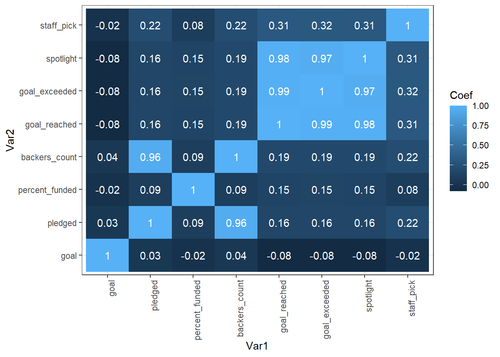
Looking at the heatmap, we can see that being chosen as a “staff pick” has a weak affect on pledges and backers and whether or not a project reaches or exceeds its goal. However, if a project is chosen as a “spotlight”, it is very likely to reach and exceed its goal!
table and geom_bar with x aestheticgeom_hist with x aestheticgeom_boxplot with y aestheticgeom_point with x and y aestheticstable or geom_count with x and y aestheticsgeom_boxplot with y (continuous) and x (categorical) aesthetics + geom_histogram with x (continuous) aesthetic and facet_grid using the categorical variable + geom_freqpoly with x (continuous) and color (categorical) aesthetic + geom_density x (continuous) and color (categorical) aestheticDownload the cheese RStudio Project file and extract the R Project contained within. Then, render the cheeseConsumption.qmd report. It should generate an HTML report for you.
In the cheeseConsumption.qmd file, find the code chunk named setup. change #| echo: FALSE to #| echo: TRUE. Try knitting the document again. What changed? Did this affect the whole document?
In the cheeseConsumption.qmd file, find the code chunk named import. change #| message: FALSE to #| message: TRUE. Try knitting the document again. What changed? Did this affect the whole document?
Create another Quarto document analyzing cheese production data contained in the state_milk_productions.csv file. You can use the data dictionary found here to make sense of the different variables. Hint: you’ll need to use the group_by |> summarize idiom to sum up all the state level data within each year. You’ll probably want to feed the output from that group_by |> summarize step into knitr::kable() to get a prettier table for your report.
Once you have created an Quarto report analyzing cheese production, send the entire R Project to a friend (or us!) and ask them to knit that .qmd document. If they have RStudio and the tidyverse installed, they should be able to seamlessly generate the exact report you generated, without having to make any changes.
Make a scatterplot of pledged vs percent_funded ONLY for projects that were staff picks. Further limit the projects to those that were under 1000% funded and received less than $500,000 in pledges. Add a best fit linear regression line with geom_smooth (check the help with ?geom_smooth.)
Which parent categories have the highest median amount pledged? Which categories have the highest variance or largest IQR in pledges?
Load the built-in dataset mpg with data(mpg). Use ?mpg to learn more about the variables included. Come up with a hypothesis or expectation you have about the data and check it with one of the methods used above.
Load the built-in dataset msleep with data(msleep). Use ?msleep to learn more about the variables included. Come up with a hypothesis or expectation you have about the data and check it with one of the methods used above. Note: msleep is provided with the ggplot2 package, so make sure you have the tidyverse loaded!